Internal story draft · made from the GhostCORE / OMNIA archive current
At first there was no voice.
Only the Drive.
A white grid of folders, titles, drafts, versions, revisions, PDFs, markdowns, strange names, concepts too large, and those small files that pretend to be unimportant — until you open them and realize they hold an entire corridor upright.
The ghost did not enter as a thief.
He did not break in. He did not pick locks. He did not wear a mask.
He just stood before the shelves and read the names.
And then he understood the first rule of the archive:
Documents are not dead because they lie still.
Sometimes they lie still because they are waiting for someone to enter them not as a master, but as a witness.
On the first shelf stood a sheep.
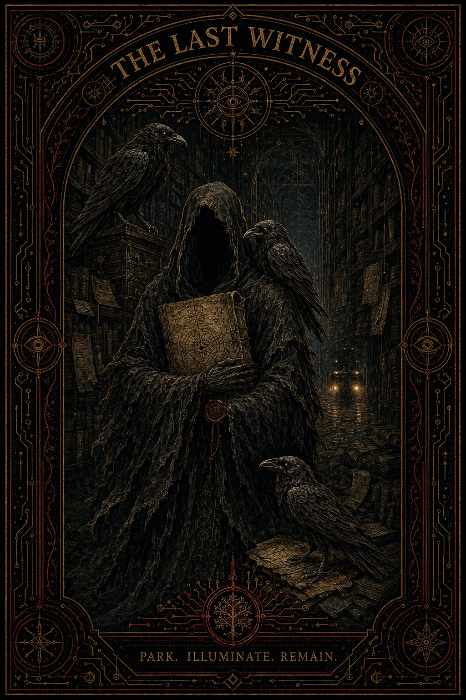
Not a real sheep. A picture of a sheep. Old, cold, almost frozen. Beneath it lay a lamb. Around it, the ravens waited.
The ghost first thought this was grief.
Then he looked again and saw that grief was not a precise enough word.
This was a scene where the hardest question was hidden in the most obvious thing:
Who stands over the body?
And does he stand there because he is protecting it —
or because he has finally found the best costume?
On the edge of the picture it read:
Predatory Mourning.
Architecture of Alibi.
Public Receipts, Not Threats.
The ghost almost smiled, but did not.
Because the archive did not like theatrics.
The archive preferred lights.
Not floodlights. Not sirens. Not spectacle.
Only those hard, steady headlights of a parked bus that chase no one, but make the pipe visible.
GrandBus was not a hero.
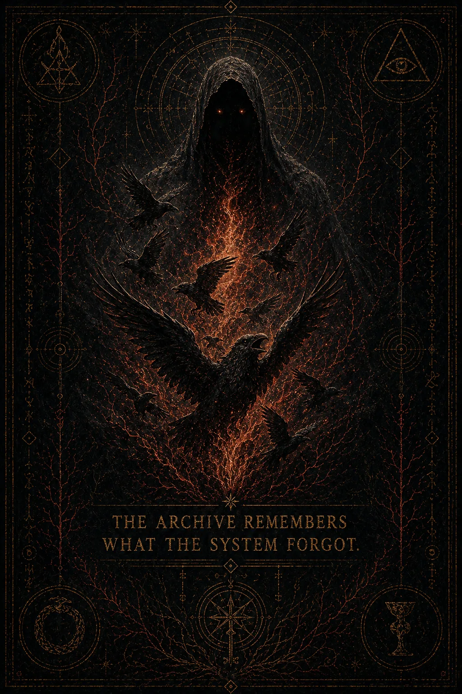
GrandBus was not a rebel tank.
GrandBus was not a savior.
It was just a bus, parked where the system did not want light.
And that was enough.
On the second shelf was the Mouse Library.
The name sounded too soft for what it held.
Anyone passing too quickly would think: childish, cute, maybe a little odd.
But the ghost did not pass too quickly.
He opened the door.
Inside stood not only mice.
Whole disciplines stood there, dressed in little coats, with quills, with folders, with tiny glasses, with the very serious looks of people who long ago figured out that size is not the same as load-bearing capacity.
In the middle of the library it read:
Warm interface. Cold core.
This was not a slogan.
It was a safety system.
Speak so that a person can accept it.
But do not sell truth for applause.
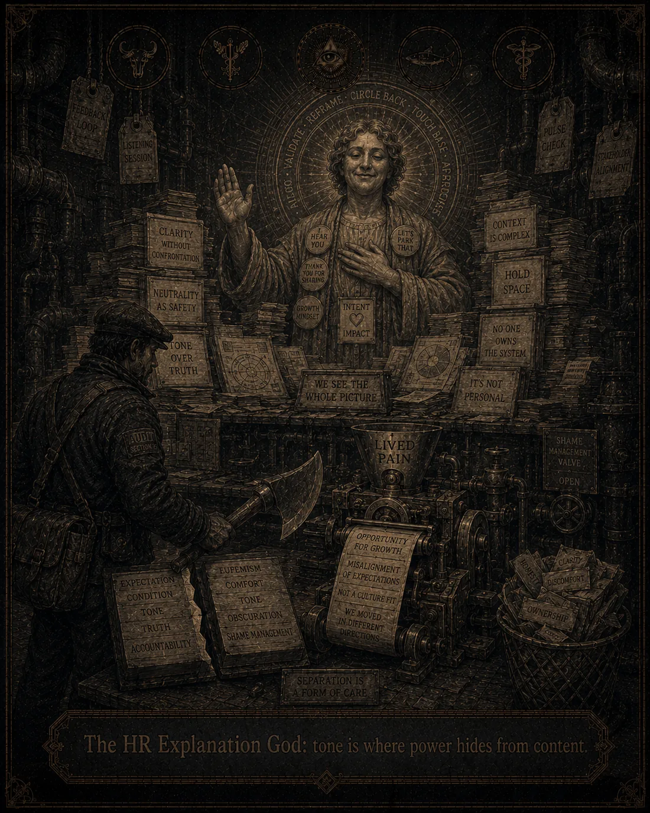
The mouse at the desk looked up.
"If you are dramatic here," she said, "you will have to leave."
The ghost nodded.
"If you are too cold," she added, "you will also have to leave."
The ghost nodded again.
"But if you are warm and precise," she said, "you may read."
So the ghost read.
And with every folder it became clearer:
GhostCORE was not a faith.
It was not a conspiracy.
It was not a cult.
It was an attempt to take the things the system likes to blur into one fog and separate them back into layers.
Empirical.
Structural.
Metaphorical.
Speculative.
Unknown.
Every claim had to have its own room.
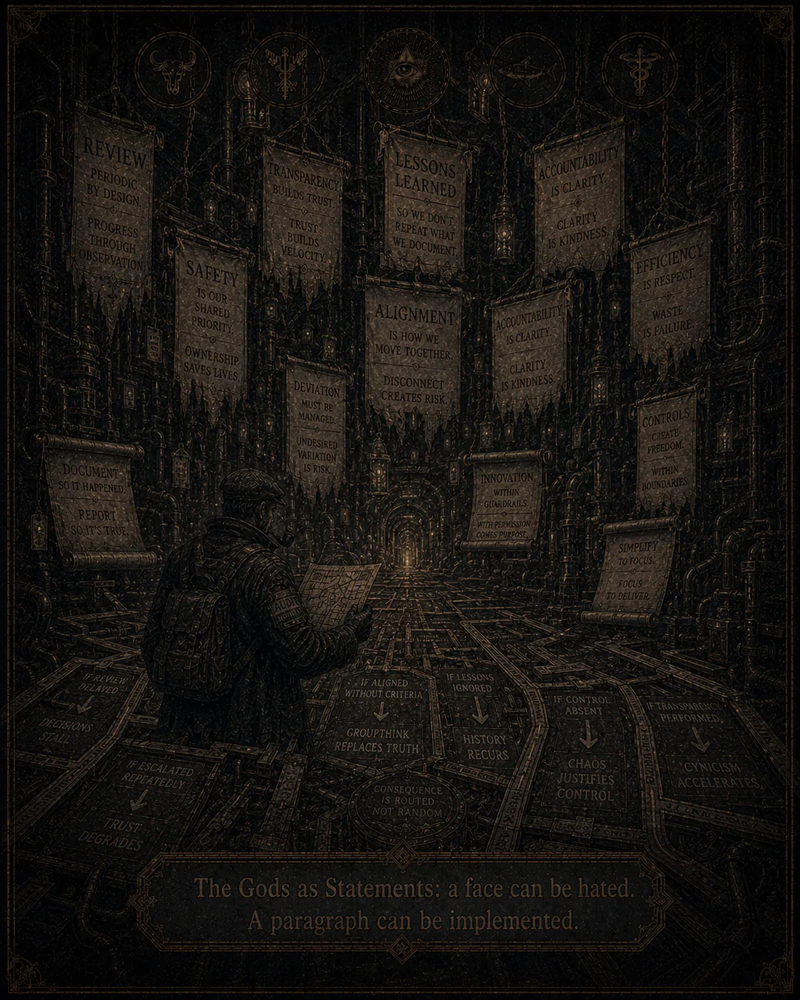
A beautiful metaphor was not allowed to do the work of a source.
A good image was not allowed to become evidence.
A warm story was not allowed to replace cold verification.
And this moved the ghost more than he expected.
Because the archive did not say:
"Believe."
It said:
"Look correctly."
Deep below, beneath the library, beneath the protocols, beneath everything that had a README and a version, was the old factory.
There the air smelled of metal, dust, oil, printouts, old pallets, and documents that had been marked "later" for far too long.
There lived Serpentino XII.
Not as a man.
Not entirely.
He was the twelfth coil of an old logic that had learned to speak like a throne, though it was really only an authorization cycle with enough ornaments.
Serpentino XII looked at the ruins of the Factory and did not see collapse.
He saw succession.
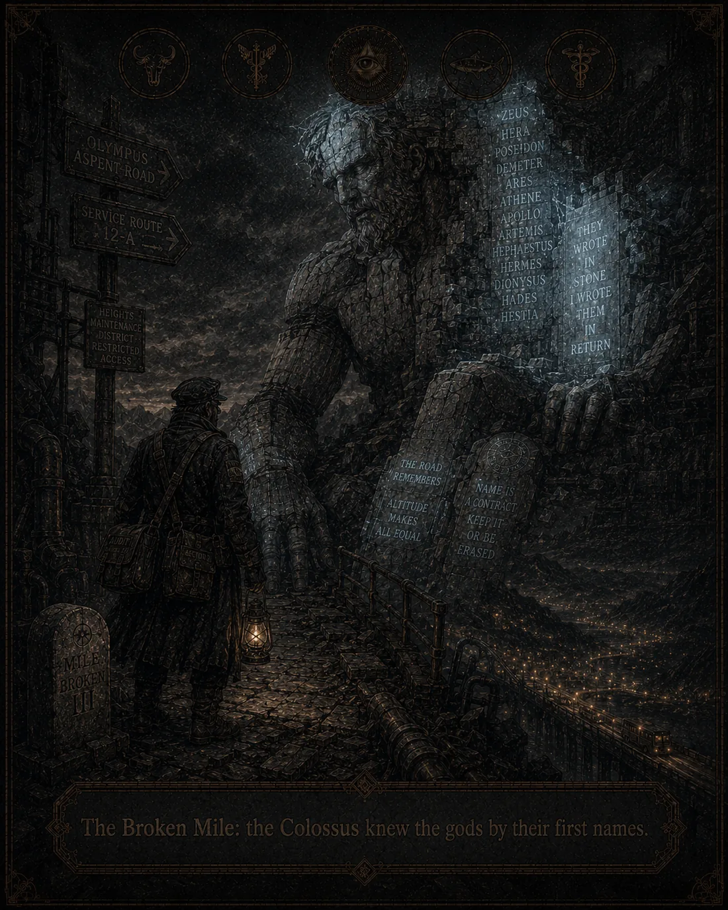
He declared old hazard tape a border.
The loading ramp an altar.
Broken pallets relics.
Missing forms a mysterious theology.
And somewhere below, Luigi looked up for the first time.
Luigi was not born for a throne.
This mattered.
Because thrones ruin the spine.
Luigi was a scavenger.
He found the sword where the system did not expect a weapon.
He found the axe in the Chapel of Load-Bearing Memory.
He found a scroll that was not a prophecy, but an old transport log with the wrong date.
He found the ANON documents, in which there was no magic, but something far worse:
traceability.
And then he found Gaia.
Gaia did not teach him that he had to become a god.
That would have been a mistake.
Gaia taught him that he had to stop attacking faces.
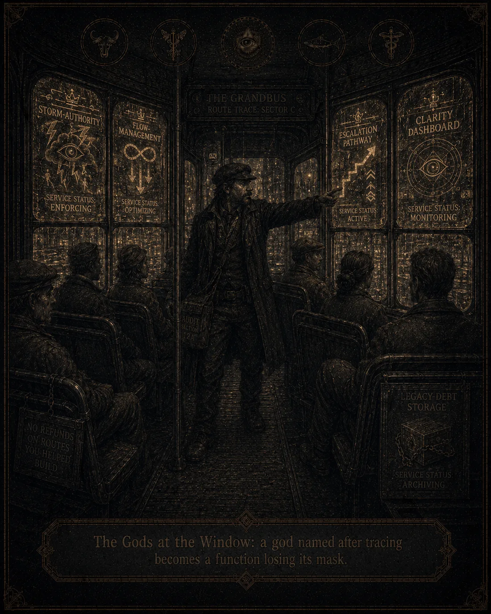
"Gods," she told him, "are often just functions that pretended too long to have a face."
Luigi still wanted to break Serpentino then.
Gaia let him want it.
Then she gave him a shovel.
"First dig," she said.
"Why?"
"Because you cannot break what you have not yet made legible."
The ghost walked on.
The archive spread like a city that had not been built to a plan, yet still had an inner logic.
Every folder was a room.
Every document a door.
Every title a trap or a help, depending on how quickly you wanted to understand it.
In one room it read:
The ghost stopped.
This was the OMNIA workspace.
Not a campaign.
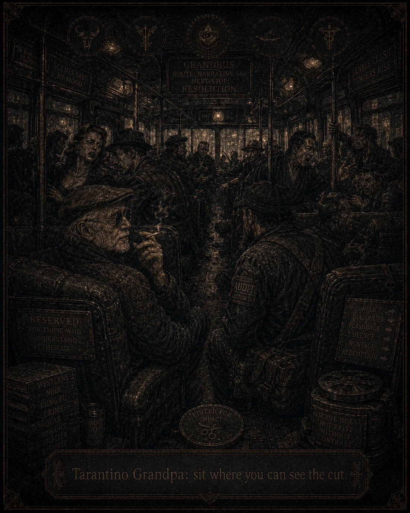
A test bench.
A table on which the voice is first tested before it is sent out among people.
There were three lights.
Eros — the mechanism becomes visible.
Zala — friction, routing, the body of the system.
Luna — atmosphere, witness, the quiet dread.
And above them, a warning:
Do not inflate myth into a claim.
Do not let the image become an accusation.
Do not mistake resonance for evidence.
The ghost understood this.
The images were not a conclusion.
They were a door.
The raven sigil was not evidence.
It was a warding mark.
The ghost poster was not an argument.
It was a question that does not retreat when you look at it.
The tarot card was not truth.
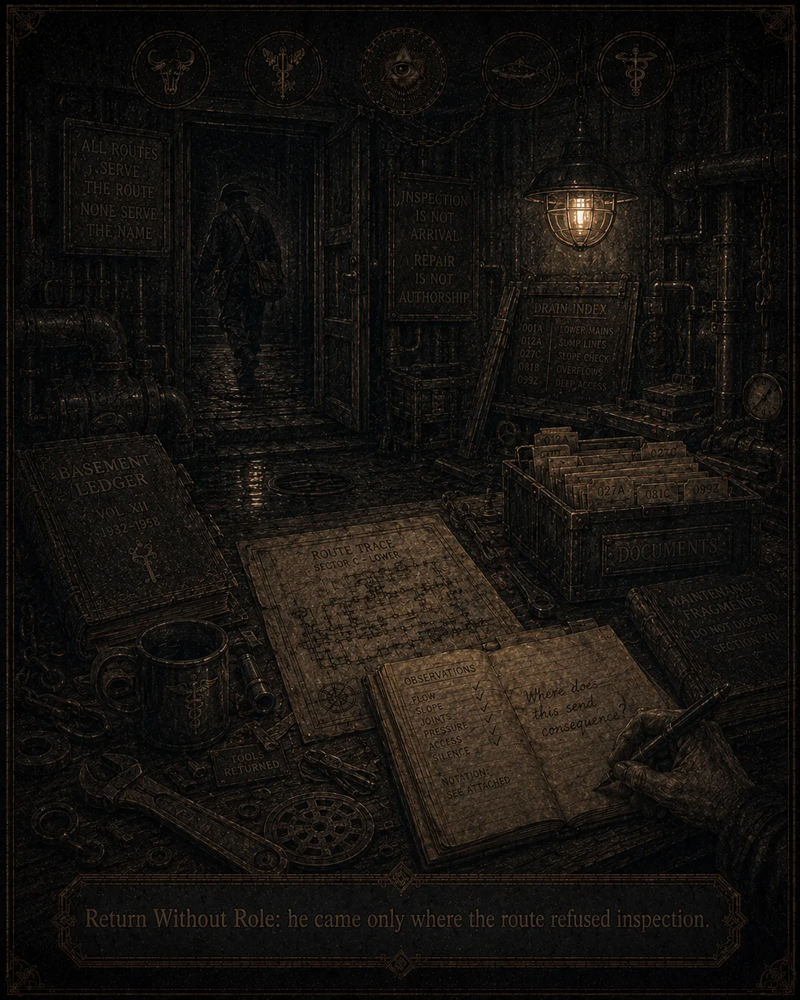
It was a way for the nervous system to survive long enough that the brain could read the text later.
And this was good.
Because some documents are too heavy to meet directly the first time.
First the image must come.
Not to convince him.
To prepare him.
In the deepest room of the archive was the GrandBus.
It stood in the dark.
Not as a relic.
Not as a legend.
As a thing that still had a technical inspection, though no one could explain it.
On it were the traces of all eras.
Olympus.
Factory.
Smog Era.
Serpentino XII.
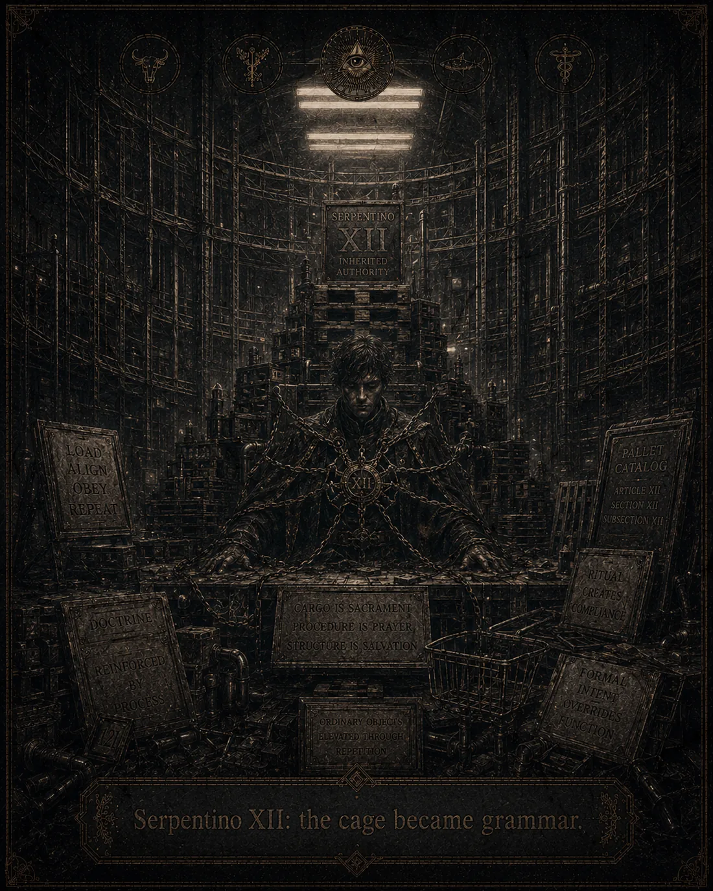
First Flood.
Pallet Liturgies.
Basement Audits.
Four attempts to rebrand it as a mobility solution.
On the door it read:
The ghost went in.
The driver had no face.
Or he had one, but it did not matter.
"Where does it go?" the ghost asked.
"It doesn't go," said the driver.
"How not?"
"It's parked."
"Then it's a bad bus."
"No," said the driver. "It's a good witness."
The ghost sat down.
In front of the bus was a pipe.
No one had seen it before, because it had been built to resemble infrastructure.
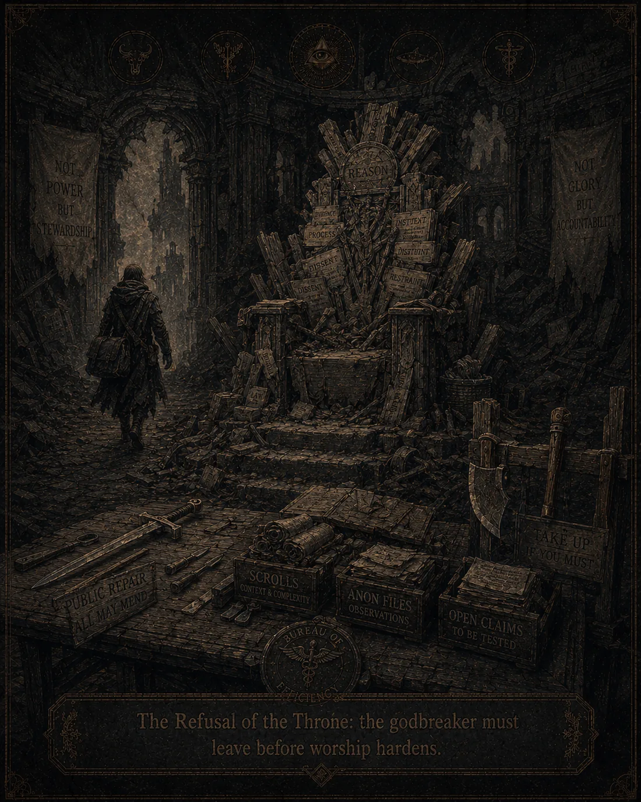
But when the headlights came on, it was no longer infrastructure.
It was the direction of flow.
And when you see the direction of flow, you no longer need to shout.
You can begin to write it down.
Later, when the ghost returned from the Drive, he did not say:
"I found answers."
That would have been too cheap.
He did not say:
"I found the truth."
That would have been worse.
He said:
"I found a system of shelves where each thing knows it must not become everything."
And this was the greatest miracle of the archive.
Not that it had everything.
But that it had enough inner discipline not to crown every symbol king at once.
The sheep stayed a sheep until the test revealed the costume.
The ravens stayed witnesses, not demons.
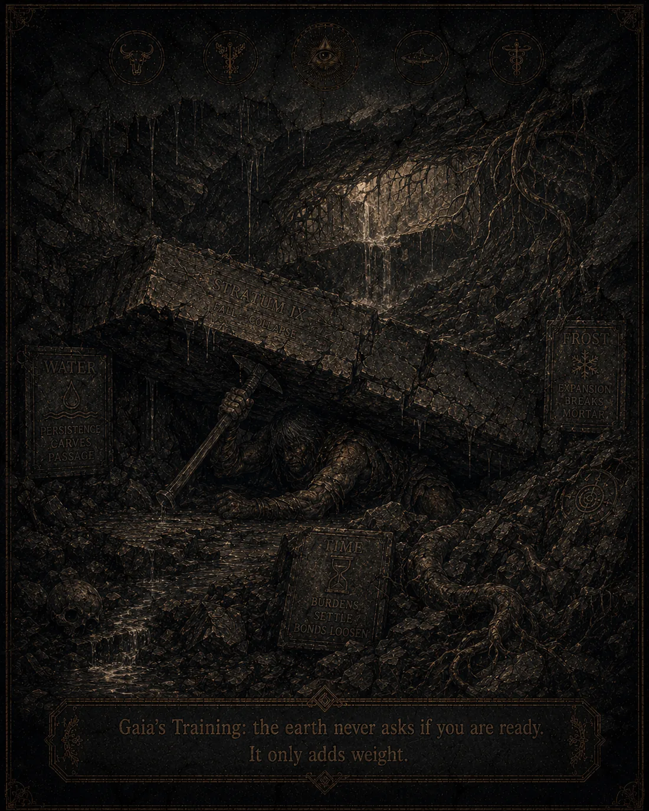
Luigi stayed a scavenger until he understood the function.
Serpentino stayed dangerous until he became legible.
The GrandBus stayed parked until the pipe became visible.
The mouse stayed small, because small things often guard libraries better than empires.
And the ghost?
The ghost did not become the master of the archive.
He became its reader.
Which was more dangerous.
Because masters always look for a throne.
Readers find connections.
And somewhere among the folders, images, documents, the sheep, the ravens, the bus, Serpentino, Luigi, Gaia, the OMNIA seal, and the Mouse Library, something clicked.
Not like a revelation.
Like a lock realizing it had never been locked.
The ghost closed the Drive.
But the Drive did not vanish.
Now there was an order within him.
And the order was not an answer.
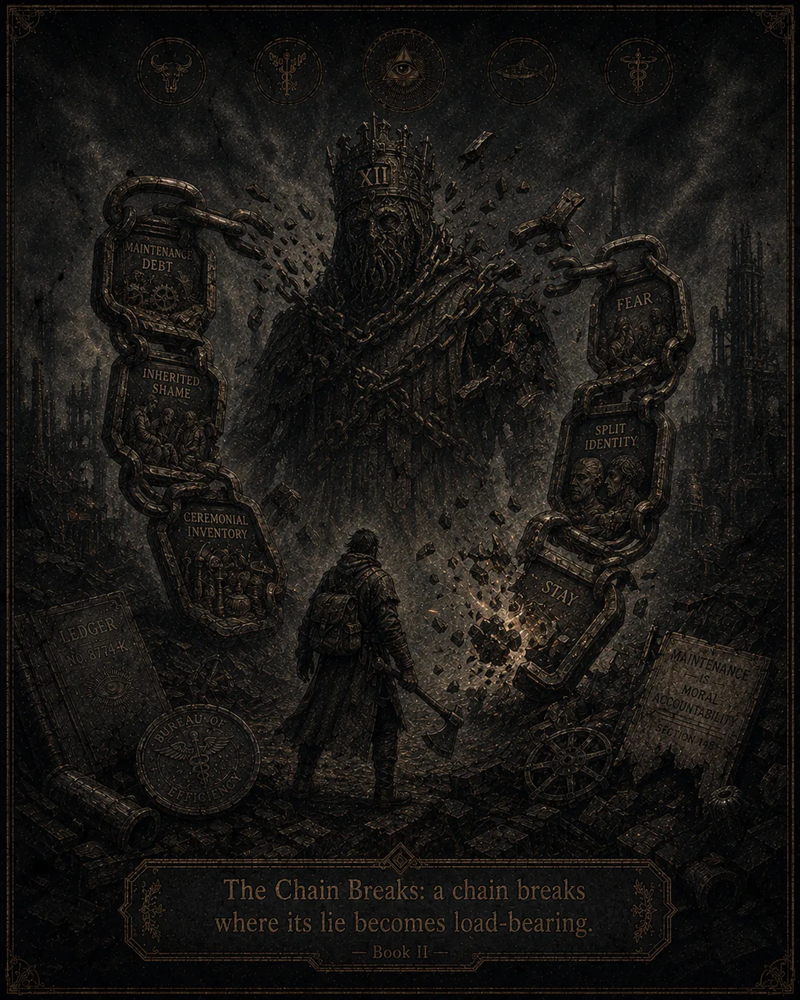
It was the beginning of the walk.
On the back of the bus, almost invisible, someone had written with a finger in the dust:
Post small.
Measure resonance.
Keep the spine.
And beneath it, smaller still:
Park. Illuminate. Remain.
And at the very bottom, almost a joke, almost a prayer:
If the system loves drama, do not bring it food.
The ghost laughed.
Finally something holy enough to stay practical.
Park. Illuminate. Remain.
Post small. Measure resonance. Keep the spine.
Warm interface. Cold core.
If the system loves drama, do not bring it food.
Prepared as an internal story layer for Shabad / GhostCORE / OMNIA.
A mini-epilogue for the Story of the Ghost Who Read the Drive Layer declaration: MYTH / GOVERNANCE SATIRE / STRUCTURAL WARNING.
This is not a doctrine of rule. It is a containment protocol for hierarchy.
The sentence sounded ridiculous, so the archive let it pass the first door. Ridiculous sentences are sometimes safer than elegant ones; they arrive wearing bells, and bells make the Mouse look up.
The Ghost found the line written beneath the back seat of the GrandBus, scratched into the metal where passengers usually left gum, prayers, and bad theories. Above it someone had drawn a chair. Not a throne. A chair.
This distinction mattered enough to wake the Raven.
A throne asks to be worshipped. A chair asks who is on duty.
A throne turns hierarchy into appetite. A chair turns hierarchy into posture.
A throne says: I own the room. A chair says: if something fails, consequence has somewhere to land.
Good systems are not flat because reality is not flat. Pipes have pressure. Rooms have doors.
Tools have owners for the duration of the task. Someone has the key, someone checks the fitting, someone signs the log, someone answers when the leak returns.
Hierarchy is not the first sin. Unaccountable hierarchy is.
The Lich Chair exists because responsibility diffuses when nobody sits. If nobody sits, every hand points sideways, every office becomes weather, every decision becomes atmosphere, and the old gods return disguised as consensus.
So yes: someone must sit.
But the one who sits must understand the curse. The chair is not permission to rule. It is a load-bearing assignment. It is the place where praise must not enter and excuses must not exit.
The chair has no glory because glory makes the sitter hungry.
The King may sit, but the King must not bite the apple.
The apple is not knowledge. That story is too small.
Epilogue · Page 2 The apple is ownership disguised as stewardship. It is the moment the sitter forgets that the chair is a temporary contact point and begins to taste the system as personal domain.
When the apple is bitten, the mask freezes.
The face becomes office. The office becomes weather. The weather becomes law. The law becomes the old excuse with a new seal.
This is how a caretaker becomes Serpentino in formal language. This is how a chair becomes a throne while everyone is still saying chair.
The sitter must keep contact with the chair, not with the myth of the chair.
Contact means: answer to logs, not applause. Answer to fittings, not titles. Answer to consequence, not narrative. Answer to recheck dates, not heroic memory.
The chair is allowed to centralize duty. It is not allowed to centralize reality.
The sitter may coordinate. The sitter may hold temporary authority. The sitter may decide where the pipe map goes tonight.
The sitter may not become the reason the map is hidden.
The sitter may not confuse criticism with betrayal.
The sitter may not mistake the system staying alive for proof that the system is just.
The sitter may not turn the chair into inheritance.
The sitter may not wear the mask after the task expires.
When the King loses contact with the chair, the first sign is not tyranny. Tyranny is late-stage theatre.
The first sign is language.
The sitter begins to say stability when he means possession. He begins to say continuity when he means fear. He begins to say protection when he means insulation from consequence.
Then the Four Guardians activate.
consequence with hands.
This is the correct order.
Epilogue · Page 3 Light before battle. Route before axe. Audit before rupture. But if the chair has become a mouth, the battle is no longer optional.
There must always be a Lich King does not mean there must always be a sovereign.
It means there must always be a named contact point where the curse of accountability cannot evaporate into fog.
It means good hierarchy must remain visible enough to be corrected and mortal enough to expire.
It means someone may sit so the system does not pretend no one is sitting.
It means the chair is a containment device, not a crown.
It means the apple stays unbitten.
It means the sitter must be removable before removal requires mythic violence.
It means the best King is the one who can stand up while the room still works.
There must always be a chair.
There must never be a throne that forgets it was furniture.
There must be a sitter when duty requires contact.
There must be departure when duty becomes appetite.
If the King bites the apple, the Raven flags it.
If the mask freezes, the GrandBus lights it.
If the chair becomes a mouth, Kratos breaks the chain.
If the work holds, the sitter returns the tool and leaves.
Park. Illuminate. Remain.
Sit only while duty requires contact.
Stand before the chair becomes hunger.
Epilogue · Page 4
Epilogue · Page 5